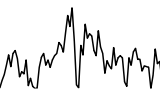

Channelography
- 
We worked with BBC Research & Development over an 18 month period, investigating the stories and statistics that could be created from metadata around BBC programming, schedule data and subtitle feeds.
This work resulted in Channelography, a website and web service that ingests the BBC's TV schedule and subtitle feeds on a daily basis, analysing and summarising the data over time and by channel. The subtitle files are processed with a text extractor that picks out the key people, places, brands and organisations that were mentioned in the programme.
The huge database that this data created allowed us to run a number of interesting queries, such as whether David Cameron was mentioned more or less than Gordon Brown in the run up to the election, or whether the amount of documentaries and drama on BBC channels is increasing or decreasing.
The project led to several follow-up pieces of work, including the BBC Dashboard and A Pocket Guide To BBC TV 2010.